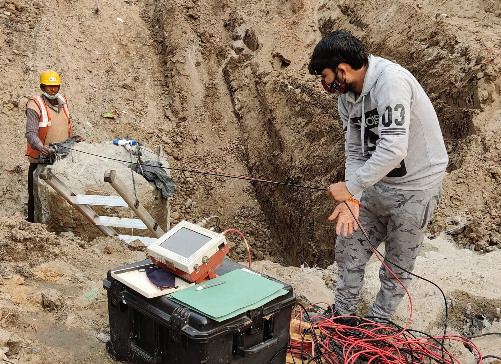
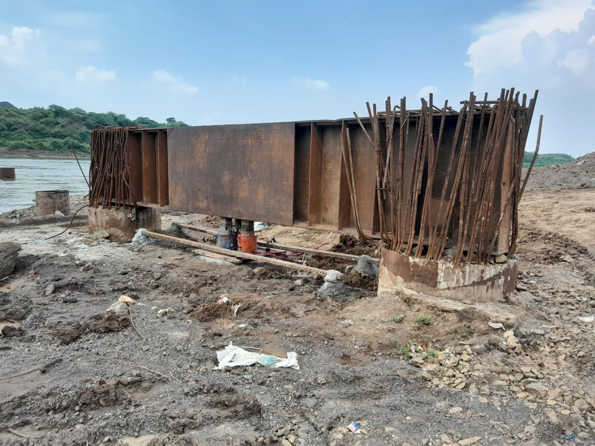
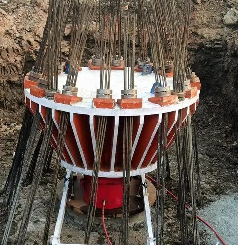

Comprehensive pile testing solutions to evaluate strength, integrity, and load-bearing capacity of deep foundation systems.
The Pile Integrity Test is a non-destructive testing method used to evaluate the quality and continuity of pile foundations.
It helps detect defects such as cracks, voids, or changes in cross-section, ensuring the reliability and safety of foundation systems.

Cross-Hole Sonic Logging is an advanced non-destructive testing method used to assess the integrity and quality of concrete in deep foundations.

The test uses ultrasonic waves transmitted between tubes installed in the pile to detect defects such as voids, cracks, and weak zones.
Identifies voids, honeycombing, and inconsistencies.
Provides reliable and detailed internal assessment.
Ideal for large diameter and deep piles.
Testing without damaging the structure.
The Kentledge Method is a static load testing technique used to determine the load-bearing capacity of pile foundations using heavy counterweights.
It provides accurate results by applying controlled loads and measuring settlement behavior under real conditions.


The Anchor Method is a static load testing technique where reaction force is provided by anchor piles or ground anchors instead of dead weights.
It is efficient for sites with limited space and allows controlled load application for accurate foundation performance evaluation.
The Rock Anchor Method is an advanced pile load testing technique where anchors are fixed into rock strata to provide high reaction forces for load application.
This method is suitable for high-capacity load testing and is widely used in critical infrastructure projects requiring precise and reliable foundation performance evaluation.
